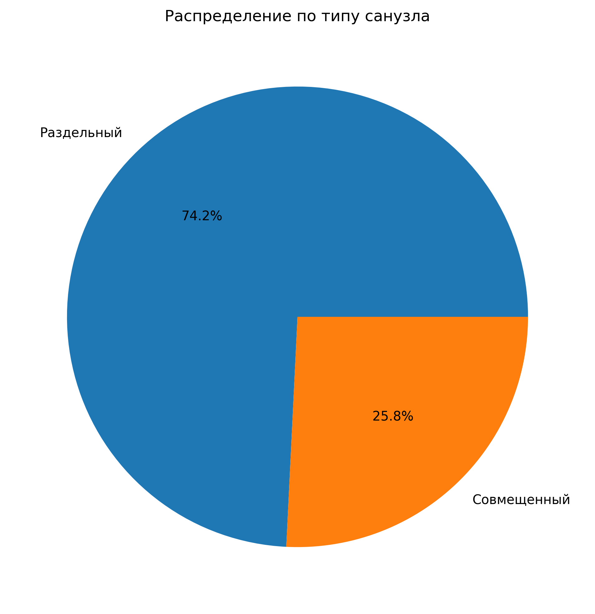
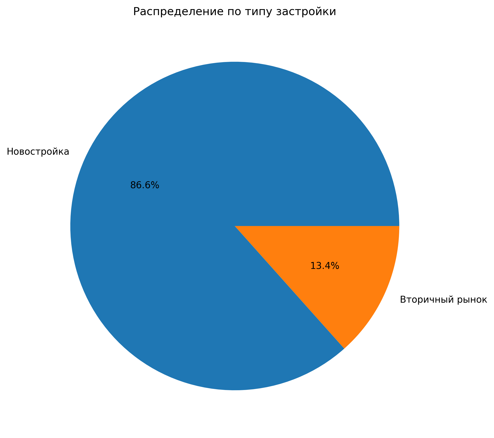
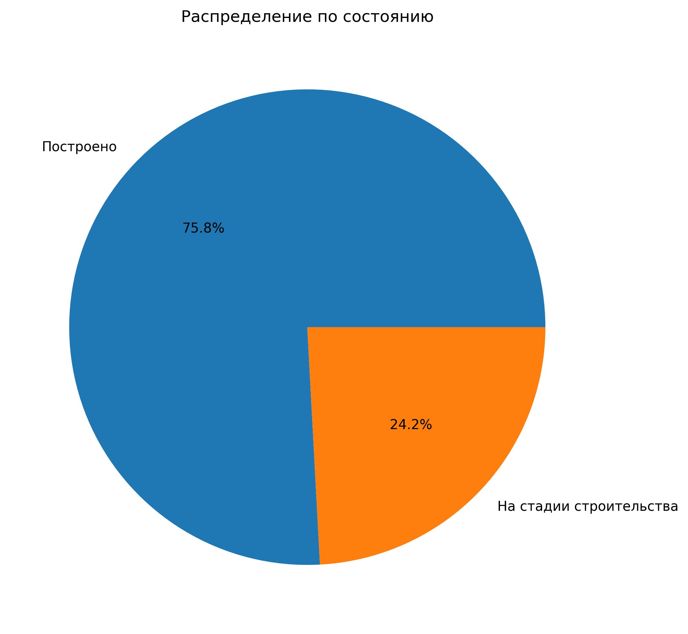
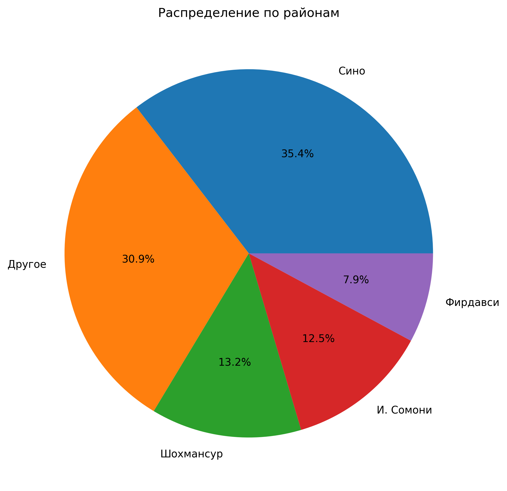
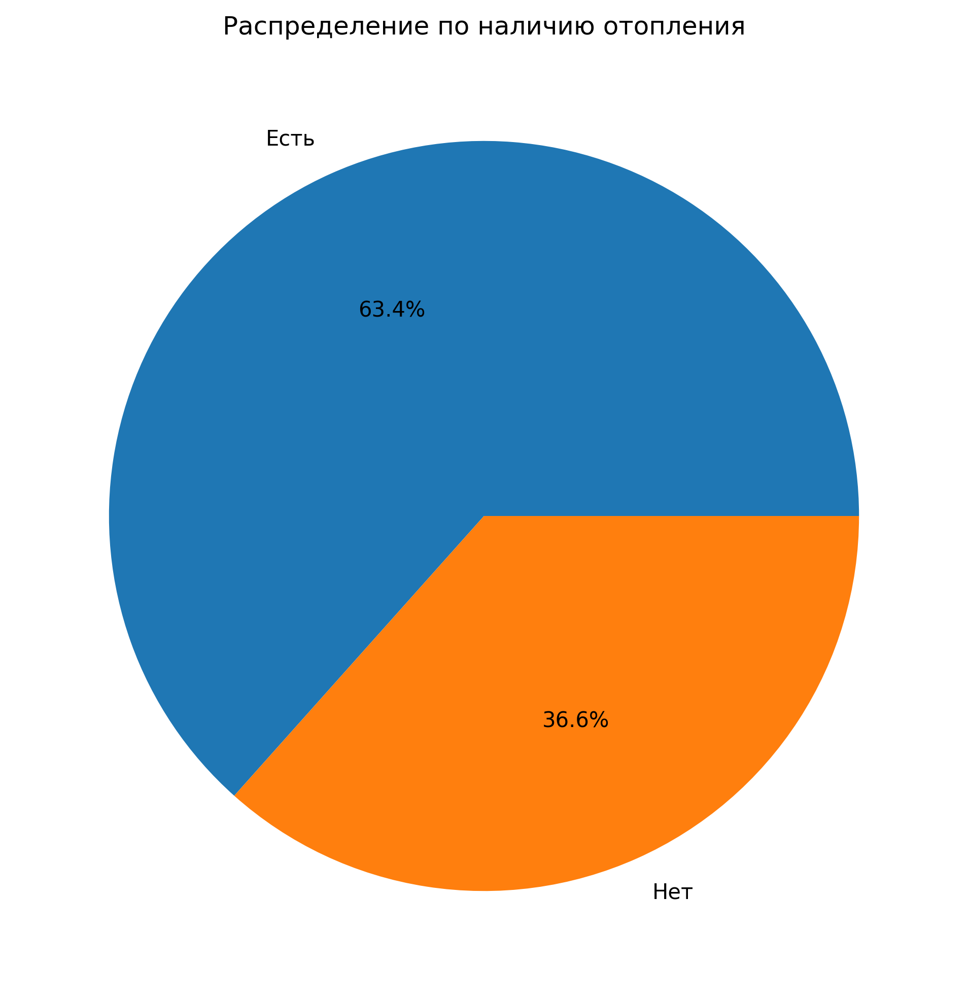
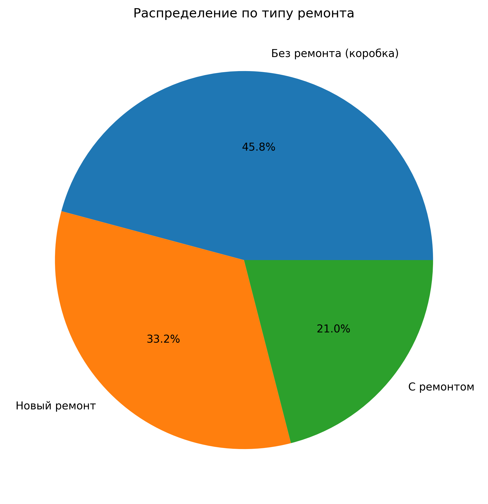
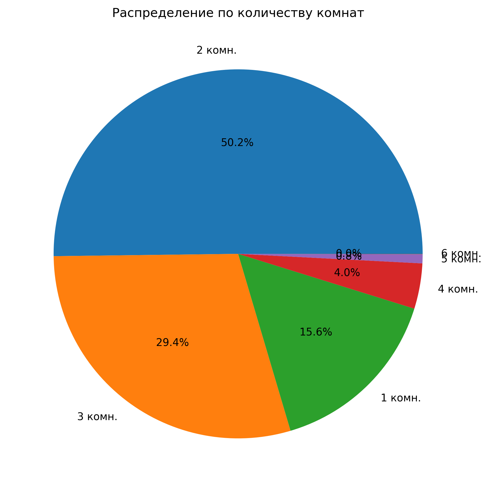
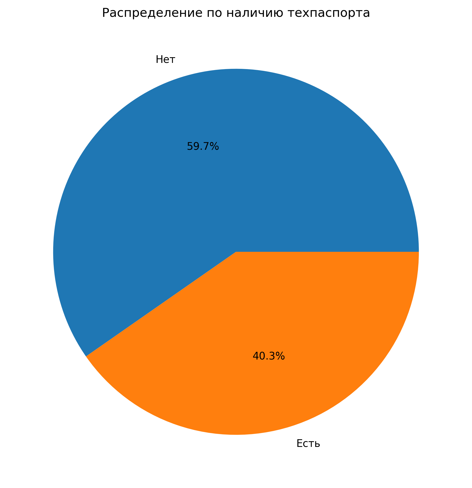

Распределение ванных комнат
Показывает количество объектов с разным числом ванных комнат в датасете.

Распределение типов зданий
Визуализация различных типов зданий и их частоты в данных.

Распределение состояний
Анализ состояния объектов недвижимости в выборке.

Распределение по районам
Географическое распределение объектов по различным районам.

Распределение типов отопления
Частота различных типов систем отопления в объектах.

Распределение ремонта
Показывает долю объектов с различным состоянием ремонта.

Распределение комнат
Статистика количества комнат в объектах недвижимости.

Распределение техпаспортов
Наличие технических паспортов у объектов в датасете.